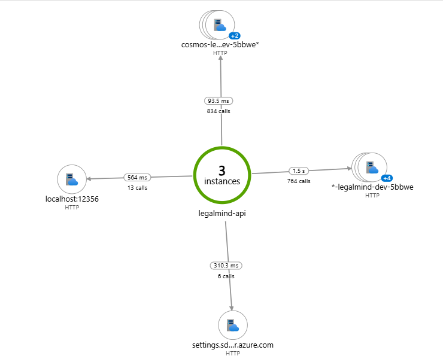

The problem
Lawyers and case handlers ask questions about their own files: is this dispute covered, what is the notice period, what did we tell the employer, what does the law say today. A chatbot that answers from general knowledge is dangerous here; one that cites a passage about the wrong policy, or from a client file the user shouldn't see, is worse, because it looks trustworthy.
How it works
An orchestrator routes each question to one of four Semantic Kernel agents: document analysis, legal research, drafting or compliance. Retrieval is Azure AI Search hybrid search (BM25 and vectors, then the semantic ranker) over chunks that each carry a one-line header naming their document. The research agent also looks up the current text of an article on wetten.overheid.nl and published rulings on rechtspraak.nl, cited by their official identifier. Every question and answer passes Content Safety and PII detection, and an LLM groundedness check labels each answer: backed by its sources, not fully supported, or unverified when the check itself fails. It never silently passes.
Users sign in with Entra ID through a Next.js front end. Their token carries their role and matter groups, and the search engine filters every query by them, failing closed, so a passage from someone else's matter never reaches the model. The front end streams the pipeline's real progress and turns citations into links to the passage or the official text.

Between the app and Azure OpenAI, API Management acts as an AI gateway: only the app's identity may call it, every user has a token budget, token use is counted per user, and a second model region takes over when the first is throttled or failing. Everything is in Bicep, reached through one managed identity with key authentication disabled on every service, and deployed by GitHub Actions over OIDC. Private networking is a deployment parameter.
Keeping it right
Golden sets of 68 retrieval and 66 answer questions run on pull requests against the deployed environment and are compared with a baseline; questions that should be declined have zero tolerance. Five alerts watch errors, latency, model throttling, restarts and the share of answers that couldn't be checked, and a runbook says what to do for each. Then I broke it on purpose to see whether any of it worked.
Results
| Measured on the live deployment | Result |
|---|---|
| Expected facts in answers · right source cited (66 questions) | 96% · 98% |
| Unanswerable questions declined or flagged, incl. near-misses | 14 / 14 |
| Right passage in the top 3: hybrid + semantic ranker vs keyword (68 queries) | 88% vs 56% |
| Questions about live law: official source cited, facts present, grounded | 8 / 8 |
| Searches by 5 test users across matters; passages leaked | 340; 0 |
| Isolated deployment: services reachable from the internet | 0 / 9 |
| Incident drills: alerts that fired | 5 / 5 |
| Load test, 2 to 30 users: errors · ceiling | 0 · ~30 answers a minute (the model capacity) |
| Primary model region throttled: calls failed over · user errors | 160 · 0 |
| Cost per answer · dev at rest | ~€0.0085 · €2.33 a day |
What I learned
Guards must fail closed
Application Insights showed the groundedness check had crashed 52 times and reported every answer as grounded. It now labels failures, and an alert watches how often.
A grounded answer can still be invented
The evaluation gate caught the agent presenting a real, anonymised court ruling as a named client's own case. Every step was correct; the link between them wasn't. Only questions that should fail found it.
Break it on purpose
The drills found an alert that could never have fired and a runbook fix that repaired nothing. Both looked right in the code.
Measure the optimisation before keeping it
Removing query rewriting halved latency; the semantic cache answered 18% of repeats and reused answers across different questions, so it stayed off.